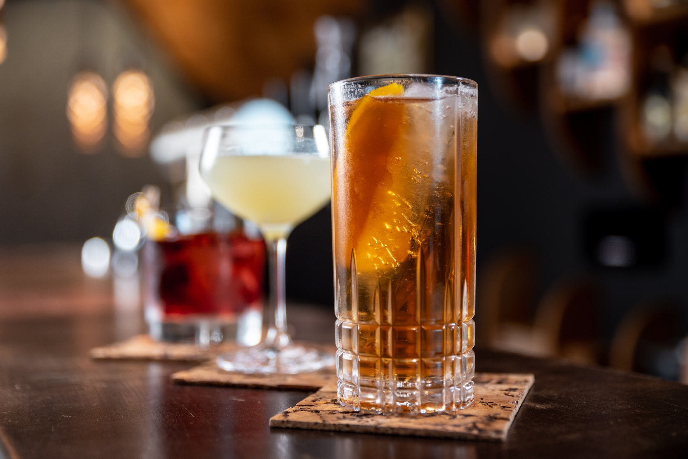

Long Island Iced Tea
롱 아일랜드 아이스티
#신나는 파티 #라틴 음악이 들리는 #달콤하고 부드러운 #약간의 탄산 #적당한 도수

Ingredients
- 콜라 10ml
- 얼음 100g
- 레몬 1개
- 설탕 시럽 20ml
- 쿠앵트로 15ml
- 진 15ml
- 데킬라 블랑코 15ml
- 보드카 15ml
- 화이트 럼 15ml
Recipe
- 하이볼 잔에 얼음을 채워줍니다.
- 보드카, 데킬라 블랑코, 화이트럼, 쿠앵트로, 진 15ml씩 넣어줍니다.
- 레몬 주스 30ml, 설탕시럽 20ml를 넣습니다.
- 그 위에 콜라를 부워주면 완성!
TIP! 레몬 조각으로 맛있는 장식을 취하는 건 어떨까요?
History
롱 아일랜드 아이스티는 비교적 도수가 높은 칵테일입니다.
그 이유는 단맛과 색조가 진하기 때문인데요. 칵테일에 들어가는 함량 음료의 비율이 낮은 대신 보드카, 럼, 데킬라, 트리플 섹, 진이 들어가 빠르게 혈중 도수가 높아집니다. 얼핏 보면 차분한 맛과 상쾌한 음료로 오해되곤 합니다.
정확히 누가 롱 아일랜드 아이스티를 처음 만들었는지는 확실히 알려져 있지 않지만 이 칵테일이 어떻게 만들어지게 되었는지 몇몇의 흥미로운 이야기가 있습니다.
먼저 뉴욕 롱 아일랜드(Long Island, New York)에서 살던 로버트 버트(Robert Butt)가 이 칵테일의 개발자라 알려져 있습니다. 또, 거의 동시에 경쟁이 비슷한 칵테일이 테네시주 킹스포트(Kingsport, Tennessee)의 한 아일랜드 주민에 의해 등장하기도 했습니다.
롱 아일랜드가 어디에서 처음 시작되었고 최초로 발전했든 간에, 그 이면의 기원 역시 확실하지는 않습니다. 하지만 이와는 다르게 처음 시작된 곳에서 이름 역시 비롯되었다고 할 수 있다고 여겨집니다.